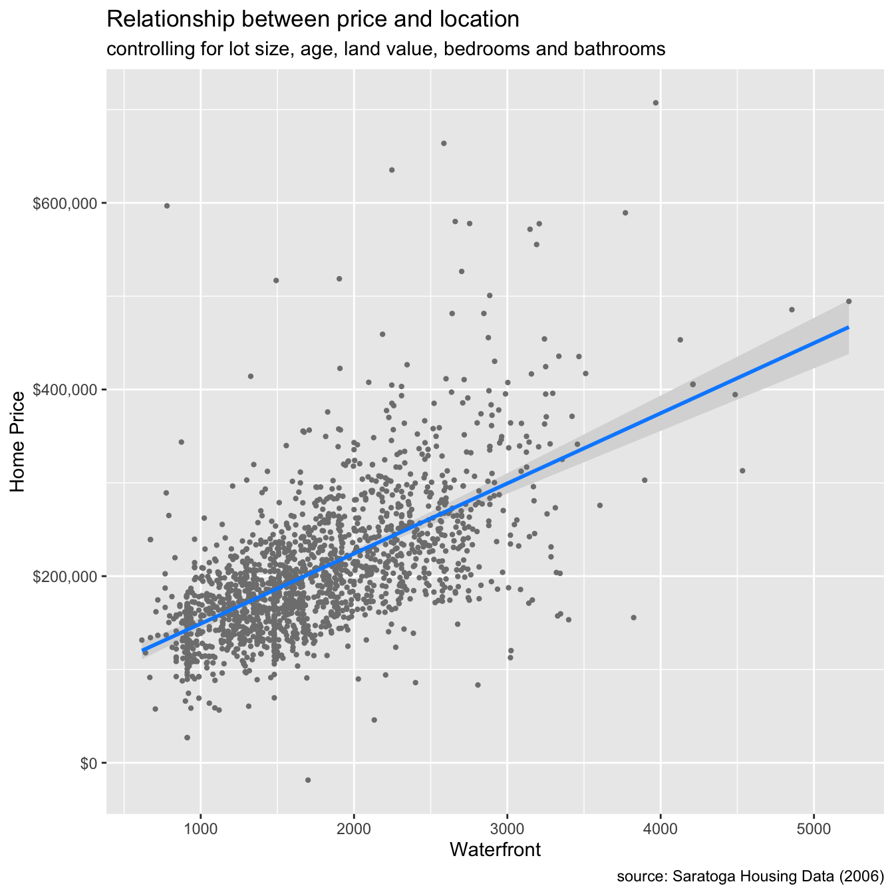
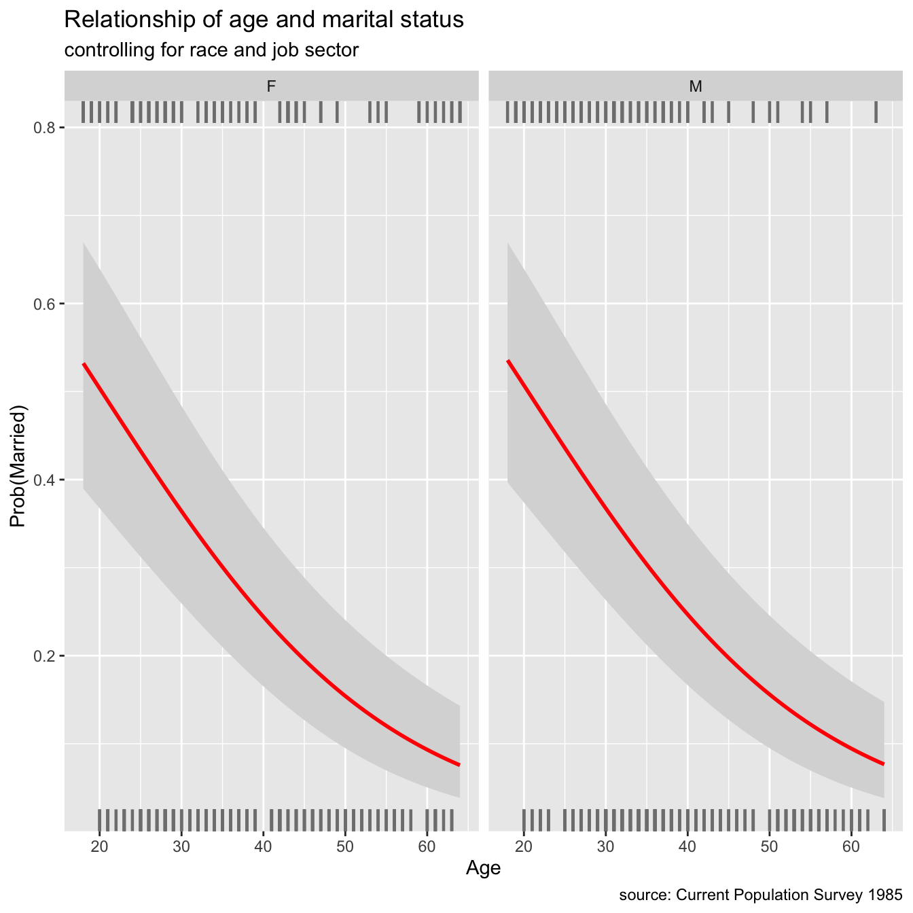
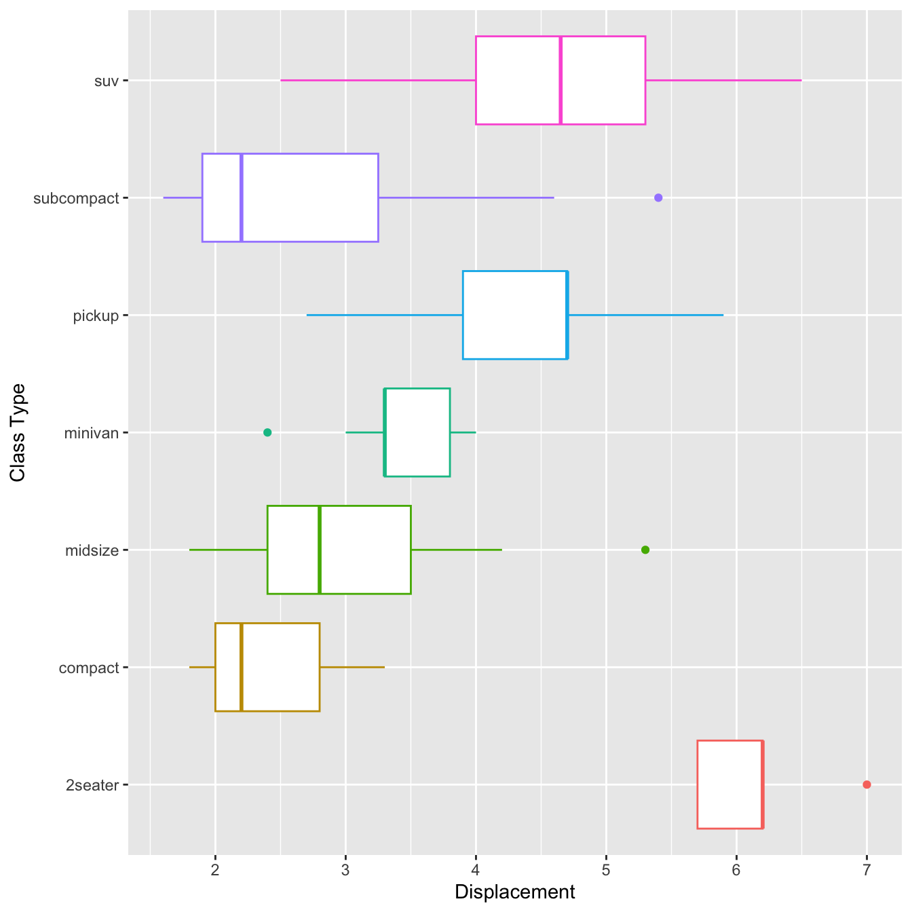
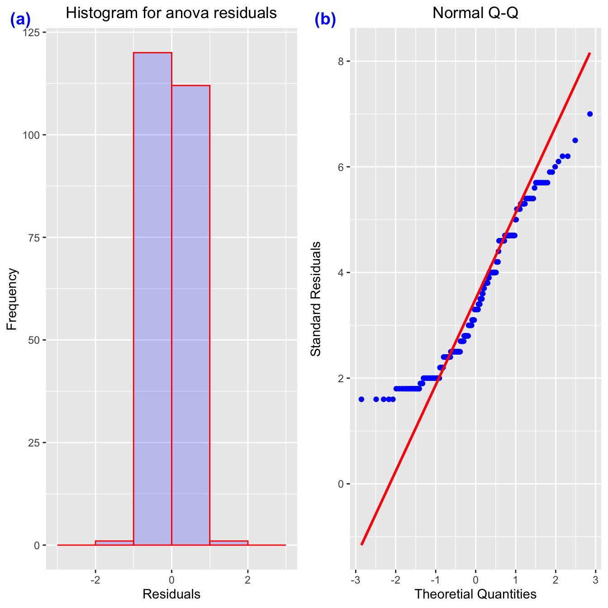

Chapter 5 Regression with R
5.0.1 Hypotheses and null hypotheses
Stages in the scientific process are:
- Observation :- information, or impression, about events or objects.
- Question :— what it is that you want to know; the scope of your investigation.
- Hypothesis:— an explanation proposed to account for observed facts.
- Prediction:— what you would expect to see if the hypothesis was true.
The null hypothesis, denoted H0, is the statement about the population parameter that is assumed to be true unless there is convincing evidence to the contrary.
The alternative hypothesis, denoted Ha, is a statement about the population parameter that is contradictory to the null hypothesis, and is accepted as true only if there is convincing evidence in favor of it.
The null hypothesis corresponds to the idea that an observed difference is due to chance. The alternative hypothesis corresponds to the idea that the observed difference is real.
We’ll be able to collect data to evaluate our ideas once we’ve finalized our hypotheses and predictions. We will either accept or reject our various hypotheses based on these data. The most important thing to remember about hypothesis testing is that hypotheses are either rejected or not rejected in science, but they are rarely established, even in the most trivial instances.
After analyzing the evidence showing our hypothesis’ predictions are correct, we can either accept it as the best current explanation for the observations or reject it and look for new hypotheses. For these hypotheses, the same approach must be followed.
It’s vital to remember that when explaining science, we don’t report null hypotheses. The null hypothesis is merely a tool for constructing a frequentist statistical test. In and of itself, it is neither entertaining nor beneficial. Again, for the sake of clarity. In a report or a presentation, there is no need to state the null hypothesis for each and every test.
R will typically display
p-valuesfrom a statistical significance test to six decimal places (e.g. p = 0.003672). However, when we write about them, the results from tests are usually presented as one of the following four categories:\(p > 0.05\), for results which are not statistically significant (sometimes also written as ‘NS’),
\(p < 0.05\), for results where \(0.01 < p < 0.05\),
\(p < 0.01\), for results where \(0.001 < p < 0.01\),
\(p < 0.001\) for results where \(p < 0.001\),
It is common to see ranges of probabilities coded with asterisks in tables and figures:
*for \(p = 0.05 \cdots 0.01\),**for \(p = 0.01 \cdots0.001\),***for \(p < 0.001\) .
This is common in tables and figures as it is a more compact and visually obvious representation than numbers. Never use the asterisks convention in the text of a report.
We use a chi-square test for independence when we want to formally test whether or not there is a statistically significant association between two categorical variables.
The hypotheses of the test are as follows:
Null hypothesis (H0): There is no significant association between the two variables.
Alternative hypothesis: (Ha): There is a significant association between the two variables.
5.0.2 Linear Regression
Linear regression allows us to explore the relationship between a quantitative response variable and an explanatory variable while other variables are held constant.
In a linear model, given a vector of inputs, \(X^T = (X_1, X_2, ..., X_p)\), we predict the output \(Y\) via the model:
\[\hat{Y} = \hat{\beta}_0 + \sum_{j=1}^p X_j \hat{\beta}_j\]
The term \(\hat{\beta}_0\) is the intercept, also known as the bias in machine learning. Often it is convenient to include the constant variable \(1\) in \(X\), include \(\beta_0\) in the vector of coefficients \(\hat{\beta}\), and then write the linear model in vector form as an inner product,
\[\hat{Y} = X^T\hat{\beta},\]
where \(X^T\) denotes the transpose of the design matrix.
Ordinary Least Squares (OLS)
There are many different methods to fitting a linear model, but the most simple and popular method is Ordinary Least Squares (OLS). The OLS method minimizes the residual sum of squares (RSS), and leads to a closed-form expression for the estimated value of the unknown parameter \(\beta\).
\[RSS(\beta) = \sum_{i=1}^n (y_i - x_i^T\beta)^2\]
\(RSS(\beta)\) is a quadradic function of the parameters, and hence its minimum always exists, but may not be unique. The solution is easiest to characterize in matrix notation:
\[RSS(\beta) = (\boldsymbol{y} - \boldsymbol{X}\beta)^T(\boldsymbol{y} - \boldsymbol{X}\beta)\]
where \(\boldsymbol{X}\) is an \(n \times p\) matrix with each row an input vector, and \(\boldsymbol{y}\) is a vector of length \(n\) representing the response in the training set. Differentiating with respect to \(\beta\), we get the normal equations,
\[\boldsymbol{X}^T(\boldsymbol{y} - \boldsymbol{X}\beta) = 0\]
Consider predicting property values based on lot size (square feet), age (years), land value (thousands of dollars), living area (square feet), number of bedrooms and bathrooms, and whether or not the home is on the waterfront.
The basic method of performing a linear regression in R is to the use the lm() function.
To see the parameter estimates alone, you can just call the lm() function. But much more results are available if you save the results to a regression output object, which can then be accessed using the summary() function.
library(tidyverse)
library(readr)
houses <- read_csv("data/houses.csv")
#fit the model
houses_lm <- lm(price ~ lotSize + age + landValue +
livingArea + bedrooms + bathrooms+waterfront,
data = houses)
# the summary of the model
summary(houses_lm)##
## Call:
## lm(formula = price ~ lotSize + age + landValue + livingArea +
## bedrooms + bathrooms + waterfront, data = houses)
##
## Residuals:
## Min 1Q Median 3Q Max
## -220208 -35416 -5443 27570 464320
##
## Coefficients:
## Estimate Std. Error t value Pr(>|t|)
## (Intercept) 1.915e+04 6.428e+03 2.980 0.002927 **
## lotSize 7.501e+03 2.075e+03 3.615 0.000309 ***
## age -1.360e+02 5.416e+01 -2.512 0.012099 *
## landValue 9.093e-01 4.583e-02 19.841 < 2e-16 ***
## livingArea 7.518e+01 4.158e+00 18.080 < 2e-16 ***
## bedrooms -5.767e+03 2.388e+03 -2.414 0.015863 *
## bathrooms 2.455e+04 3.332e+03 7.366 2.71e-13 ***
## waterfrontYes 1.207e+05 1.560e+04 7.738 1.70e-14 ***
## ---
## Signif. codes: 0 '***' 0.001 '**' 0.01 '*' 0.05 '.' 0.1 ' ' 1
##
## Residual standard error: 59370 on 1720 degrees of freedom
## Multiple R-squared: 0.6378, Adjusted R-squared: 0.6363
## F-statistic: 432.6 on 7 and 1720 DF, p-value: < 2.2e-16And we can use the anova() method to get an ANOVA-style table of the model:
# interval estimates for our coefficients:
confint(houses_lm)## 2.5 % 97.5 %
## (Intercept) 6.544790e+03 3.175958e+04
## lotSize 3.430737e+03 1.157085e+04
## age -2.422625e+02 -2.981775e+01
## landValue 8.194178e-01 9.991965e-01
## livingArea 6.702317e+01 8.333415e+01
## bedrooms -1.045130e+04 -1.082222e+03
## bathrooms 1.801138e+04 3.108283e+04
## waterfrontYes 9.012803e+04 1.513252e+055.0.2.1 Formatting regression output: tidyr
With the tidy() function from the broom package, you can easily create standard regression output tables.
library(broom)
tidy(houses_lm)## # A tibble: 8 × 5
## term estimate std.error statistic p.value
## <chr> <dbl> <dbl> <dbl> <dbl>
## 1 (Intercept) 19152. 6428. 2.98 2.93e- 3
## 2 lotSize 7501. 2075. 3.61 3.09e- 4
## 3 age -136. 54.2 -2.51 1.21e- 2
## 4 landValue 0.909 0.0458 19.8 4.72e-79
## 5 livingArea 75.2 4.16 18.1 4.95e-67
## 6 bedrooms -5767. 2388. -2.41 1.59e- 2
## 7 bathrooms 24547. 3332. 7.37 2.71e-13
## 8 waterfrontYes 120727. 15601. 7.74 1.70e-145.0.2.2 Regression Visualization
The visreg function takes (1) the model and (2) the variable of interest and plots the conditional relationship, controlling for the other variables. A ggplot2 graph is created with the argument gg = TRUE.
houses <- read_csv("data/houses.csv")
houses_lm <- lm(price ~ lotSize + age + landValue +
livingArea + bedrooms + bathrooms +
waterfront,
data = houses)
summary(houses_lm)%>%
coef()## Estimate Std. Error t value Pr(>|t|)
## (Intercept) 1.915218e+04 6.427936e+03 2.979523 2.927430e-03
## lotSize 7.500792e+03 2.075136e+03 3.614604 3.094673e-04
## age -1.360401e+02 5.415794e+01 -2.511914 1.209876e-02
## landValue 9.093072e-01 4.583046e-02 19.840672 4.716289e-79
## livingArea 7.517866e+01 4.158113e+00 18.079993 4.954903e-67
## bedrooms -5.766760e+03 2.388433e+03 -2.414454 1.586262e-02
## bathrooms 2.454711e+04 3.332268e+03 7.366487 2.705486e-13
## waterfrontYes 1.207266e+05 1.560083e+04 7.738475 1.703303e-14# conditional plot of price vs. living area
library(visreg)
visreg(houses_lm, "livingArea", gg = TRUE)+
scale_y_continuous(label = scales::dollar) +
labs(title = "Relationship between price and location",
subtitle = "controlling for lot size, age, land value, bedrooms and bathrooms",
caption = "source: Saratoga Housing Data (2006)",
y = "Home Price",
x = "Waterfront")
5.0.3 Generalized Linear Model(GLM)
The generalized linear model (GLM) is a variant of ordinary linear regression that allows for response variables with error distribution models other than a normal distribution, such as the Gaussian distribution.
GLMs are fit with function glm(). Like linear models (lm()s), glm()s have formulas and data as inputs, but also have a family input. Generalized Linear Model Syntax:
glm( price ~ lotSize + age + landValue +
livingArea + bedrooms + bathrooms, data=houses, family ="gaussian")##
## Call: glm(formula = price ~ lotSize + age + landValue + livingArea +
## bedrooms + bathrooms, family = "gaussian", data = houses)
##
## Coefficients:
## (Intercept) lotSize age landValue livingArea bedrooms
## 22462.4015 7459.0035 -122.4922 0.9541 75.3707 -7298.7108
## bathrooms
## 24719.1355
##
## Degrees of Freedom: 1727 Total (i.e. Null); 1721 Residual
## Null Deviance: 1.674e+13
## Residual Deviance: 6.273e+12 AIC: 42960The Gaussian family is how R refers to the normal distribution and is the default for a glm(). If the family is Gaussian then a GLM is the same as an LM. Non-normal errors or distributions can occur in generalized linear models.However, the possible distributions are constrained. You can, for example, use the Poisson family for count data or the binomial family for binomial data.
5.0.4 Logistic Regression
While other variables are kept constant, logistic regression can be used to investigate the relationship between a binary response variable and an explanatory variable. There are two levels to binary response variables (yes/no, lived/died, pass/fail, malignant/benign). The visreg package, like linear regression, may be used to illustrate these relationships.
library(tidyverse)
library(visreg)
library(ggplot2)
marriage <- read.csv("data/marriage.csv",stringsAsFactors = T)
#LR
married_glm <- glm(married ~ sex + age + race + sector,
family= binomial(link = "logit"),
data=marriage)
# plot regression
visreg(married_glm, "age",
by = "sex",
line=list(col="red"),
gg = TRUE,
scale="response") +
labs(y = "Prob(Married)",
x = "Age",
title = "Relationship of age and marital status",
subtitle = "controlling for race and job sector",
caption = "source: Current Population Survey 1985")
5.1 Anova with R
ANOVA is one of the most often used statistical techniques in the field of ecological and environmental studies. It is also widely used in many social science areas, including as sociology, psychology, communication, and media studies.
Let’s review a few key definitions in order to better understand ANOVA.
Categorical variables have a limited number of categories or groupings, such as treatments, material type, and payment method.
Continuous variables, such as time and height, have an endless number of values between any two values.
An explanatory variable (also known as a independent variable, factor, treatment, or predictor variable) in an experiment is a variable that is changed to examine how it impacts a response variable (also called dependent variable or outcome variable).
The explanatory variable is the CAUSE and the response variable is the EFFECT.
The analysis of variance (ANOVA) is used to determine how a continuous dependent variable (y) varies across levels of one or more categorical independent variables (x). As explained above, the latter are often referred to as “factors”. Within each factor, there may be different categories called levels.
You probably guessed it by now: ANOVA = Analysis of Variance!
library(tidyverse)
mpg <- read.csv("data/mpg.csv",stringsAsFactors = TRUE)
mpg$cyl <- factor(mpg$cyl)
mpg %>%
ggplot(aes(x=class, y=displ, color=class))+
geom_boxplot(show.legend = F)+
coord_flip()+
labs(x="Class Type", y="Displacement")
# Test outliers
mpg %>%
group_by(class) %>%
identify_outliers(displ)## # A tibble: 4 × 14
## class X manuf…¹ model displ year cyl trans drv cty hwy fl
## <fct> <int> <fct> <fct> <dbl> <int> <fct> <fct> <fct> <int> <int> <fct>
## 1 2seater 28 chevro… corv… 7 2008 8 manu… r 15 24 p
## 2 midsize 159 pontiac gran… 5.3 2008 8 auto… f 16 25 p
## 3 minivan 38 dodge cara… 2.4 1999 4 auto… f 18 24 r
## 4 subcompact 99 ford must… 5.4 2008 8 manu… r 14 20 p
## # … with 2 more variables: is.outlier <lgl>, is.extreme <lgl>, and abbreviated
## # variable name ¹manufacturer## get summary stat
library(rstatix)
mpg %>%
group_by(class) %>%
get_summary_stats(displ, type = "mean_sd")## # A tibble: 7 × 5
## class variable n mean sd
## <fct> <fct> <dbl> <dbl> <dbl>
## 1 2seater displ 5 6.16 0.532
## 2 compact displ 47 2.33 0.452
## 3 midsize displ 41 2.92 0.719
## 4 minivan displ 11 3.39 0.453
## 5 pickup displ 33 4.42 0.829
## 6 subcompact displ 35 2.66 1.10
## 7 suv displ 62 4.46 1.075.1.1 3 Steps to conduct an ANOVA
Here are the 3 steps you should follow to conduct a standard ANOVA in R:
- Create an ANOVA object using the
aov()function. In theaov()function, specify the independent and dependent variable(s) with a formula with the formaty ~ x1 + x2where y is the dependent variable, and x1, x2 … are one (more more) factor independent variables.
# Step 1: Create an aov object
mod_aov <- aov(formula = y ~ x1 + x2 + ...,
data = data)- Create a summary ANOVA table by applying the summary() function to the ANOVA object you created in Step 1.
# Step 2: Look at a summary of the aov object
summary(mod_aov)- If necessary, calculate post-hoc tests by applying a post-hoc testing function like
TukeyHSD()to the ANOVA object you created in Step 1.
# Step 3: Calculate post-hoc tests
TukeyHSD(mod_aov)# Step 1: Setup Null Hypothesis and Alternate Hypothesis
# H0 = mu = mu01 = mu02(There is no difference
# between average displacement for different class)
# H1 = Not all means are equal
# Step 2: Calculate test statistics using aov function
mpg_aov1 <- aov(displ~ class+ cyl, data = mpg)
summary(mpg_aov1)## Df Sum Sq Mean Sq F value Pr(>F)
## class 6 223.09 37.18 249.0 <2e-16 ***
## cyl 3 132.37 44.12 295.4 <2e-16 ***
## Residuals 224 33.45 0.15
## ---
## Signif. codes: 0 '***' 0.001 '**' 0.01 '*' 0.05 '.' 0.1 ' ' 1capture.output(summary(mpg_aov1), file = "data/mpg_anova1.doc")One of the most common post-hoc tests for standard ANOVAs is the Tukey Honestly Significant Difference (HSD) test:
TukeyHSD(mpg_aov1,which = 'class')## Tukey multiple comparisons of means
## 95% family-wise confidence level
##
## Fit: aov(formula = displ ~ class + cyl, data = mpg)
##
## $class
## diff lwr upr p adj
## compact-2seater -3.83446809 -4.37535422 -3.293581954 0.0000000
## midsize-2seater -3.23804878 -3.78272710 -2.693370459 0.0000000
## minivan-2seater -2.76909091 -3.38926947 -2.148912344 0.0000000
## pickup-2seater -1.74181818 -2.29362610 -1.190010259 0.0000000
## subcompact-2seater -3.50000000 -4.04972954 -2.950270458 0.0000000
## suv-2seater -1.70354839 -2.23810617 -1.168990601 0.0000000
## midsize-compact 0.59641930 0.35070039 0.842138217 0.0000000
## minivan-compact 1.06537718 0.68024764 1.450506716 0.0000000
## pickup-compact 2.09264990 1.83150762 2.353792188 0.0000000
## subcompact-compact 0.33446809 0.07774668 0.591189490 0.0026292
## suv-compact 2.13091970 1.90853414 2.353305256 0.0000000
## minivan-midsize 0.46895787 0.07852039 0.859395356 0.0077517
## pickup-midsize 1.49623060 1.22732177 1.765139431 0.0000000
## subcompact-midsize -0.26195122 -0.52656896 0.002666517 0.0543309
## suv-midsize 1.53450039 1.30304413 1.765956660 0.0000000
## pickup-minivan 1.02727273 0.62694918 1.427596270 0.0000000
## subcompact-minivan -0.73090909 -1.12836289 -0.333455288 0.0000025
## suv-minivan 1.06554252 0.68935243 1.441732610 0.0000000
## subcompact-pickup -1.75818182 -2.03718013 -1.479183510 0.0000000
## suv-pickup 0.03826979 -0.20949928 0.286038866 0.9992811
## suv-subcompact 1.79645161 1.55334649 2.039556733 0.0000000This table displays the differences between each group pair. The diff column displays the mean differences between groups (which, thankfully, are identical to what we saw in the regression object summary earlier), a confidence interval for the difference, and a p-value testing the null hypothesis that the group differences are not different.
# Step 1: Setup Null Hypothesis and Alternate Hypothesis
# H0 = mu = mu01 = mu02(There is no difference
# between average displacement for different class)
# H1 = Not all means are equal
mpg <- read.csv("data/mpg.csv",stringsAsFactors = TRUE)
# Step 2: Calculate test statistics using aov function with interaction
mpg_aov2 <- aov(displ~ class+ cyl:class, data = mpg)
summary(mpg_aov2)## Df Sum Sq Mean Sq F value Pr(>F)
## class 6 223.09 37.18 258.0 <2e-16 ***
## class:cyl 6 133.98 22.33 154.9 <2e-16 ***
## Residuals 221 31.85 0.14
## ---
## Signif. codes: 0 '***' 0.001 '**' 0.01 '*' 0.05 '.' 0.1 ' ' 1capture.output(summary(mpg_aov2), file = "data/mpg_anova2.doc")- Quantile-Quantile Plots (or QQ-Plots) compare the quantiles between two distributions - typically the observed distribution and an assumed distribution like the normal distribution. If the points fall on the diagonal line, then the distributions match. If the points differ from the diagonal line, then the distributions differ.
qq_mpg <- mpg %>%
ggplot(aes(sample=displ)) +
geom_qq(color='blue')+
geom_qq_line(color='red', linewidth=1)+
xlab("Theoretial Quantities")+
ylab("Standard Residuals")+
ggtitle("Normal Q-Q")+
theme(plot.title = element_text(hjust = 0.5))mpg_residuals <- as.data.frame(mpg_aov1$residuals)
names(mpg_residuals) <- c("residuals")
mpg_residuals## residuals
## 1 -0.2038584618
## 2 -0.2038584618
## 3 -0.0038584618
## 4 -0.0038584618
## 5 -0.2948653396
## 6 -0.2948653396
## 7 0.0051346604
## 8 -0.2038584618
## 9 -0.2038584618
## 10 -0.0038584618
## 11 -0.0038584618
## 12 -0.2948653396
## 13 -0.2948653396
## 14 0.0051346604
## 15 0.0051346604
## 16 -0.4798846195
## 17 -0.1798846195
## 18 -0.4703049429
## 19 0.1645460841
## 20 0.1645460841
## 21 0.1645460841
## 22 0.5645460841
## 23 0.8645460841
## 24 -0.4600000000
## 25 -0.4600000000
## 26 0.0400000000
## 27 0.0400000000
## 28 0.8400000000
## 29 0.1645460841
## 30 0.1645460841
## 31 0.5645460841
## 32 1.3645460841
## 33 0.2111222583
## 34 0.2111222583
## 35 -0.1798846195
## 36 0.2201153805
## 37 0.3201153805
## 38 0.0009153434
## 39 -0.4900915343
## 40 -0.1900915343
## 41 -0.1900915343
## 42 -0.1900915343
## 43 -0.1900915343
## 44 -0.1900915343
## 45 0.3099084657
## 46 0.3099084657
## 47 0.3099084657
## 48 0.5099084657
## 49 0.0253147223
## 50 0.0253147223
## 51 0.2253147223
## 52 0.2253147223
## 53 -0.3651056012
## 54 -0.3651056012
## 55 -0.3651056012
## 56 0.1348943988
## 57 0.1348943988
## 58 0.1549664076
## 59 -0.4354539159
## 60 -0.4354539159
## 61 -0.4354539159
## 62 0.0645460841
## 63 0.5645460841
## 64 0.7645460841
## 65 -0.3651056012
## 66 -0.3651056012
## 67 -0.3651056012
## 68 -0.3651056012
## 69 -0.3651056012
## 70 -0.3651056012
## 71 0.1348943988
## 72 0.1348943988
## 73 0.6348943988
## 74 0.8348943988
## 75 -0.5354539159
## 76 0.2645460841
## 77 0.2645460841
## 78 0.2549664076
## 79 0.2549664076
## 80 0.2549664076
## 81 0.2549664076
## 82 -0.5354539159
## 83 -0.1354539159
## 84 0.5253147223
## 85 0.5253147223
## 86 -0.4651056012
## 87 -0.4651056012
## 88 -0.4651056012
## 89 0.3348943988
## 90 0.3348943988
## 91 0.6484144660
## 92 0.6484144660
## 93 0.8484144660
## 94 0.8484144660
## 95 0.0579941426
## 96 0.0579941426
## 97 0.0579941426
## 98 0.0579941426
## 99 0.8579941426
## 100 -0.4605786562
## 101 -0.4605786562
## 102 -0.4605786562
## 103 -0.4605786562
## 104 -0.4605786562
## 105 -0.2605786562
## 106 -0.2605786562
## 107 -0.2605786562
## 108 -0.0605786562
## 109 0.2111222583
## 110 0.2111222583
## 111 0.2111222583
## 112 0.2111222583
## 113 -0.7798846195
## 114 -0.7798846195
## 115 0.0201153805
## 116 -0.0605786562
## 117 -0.0605786562
## 118 -0.0605786562
## 119 -0.0605786562
## 120 -0.4515855340
## 121 -0.4515855340
## 122 -0.4515855340
## 123 -0.7450335924
## 124 -0.0450335924
## 125 0.2549664076
## 126 -0.4354539159
## 127 -0.4354539159
## 128 -0.4354539159
## 129 0.5645460841
## 130 0.9645460841
## 131 -1.1354539159
## 132 -0.9354539159
## 133 -0.7354539159
## 134 -0.5354539159
## 135 0.2645460841
## 136 0.2645460841
## 137 0.2645460841
## 138 0.2549664076
## 139 0.2549664076
## 140 -0.5354539159
## 141 -0.1354539159
## 142 0.3961415382
## 143 0.3961415382
## 144 0.3111222583
## 145 0.3111222583
## 146 0.2201153805
## 147 0.2201153805
## 148 -0.2798846195
## 149 -0.2798846195
## 150 0.2201153805
## 151 -0.4450335924
## 152 -0.4450335924
## 153 0.2549664076
## 154 0.4645460841
## 155 -0.1798846195
## 156 0.5201153805
## 157 0.5201153805
## 158 0.5201153805
## 159 0.6296950571
## 160 -0.1540267147
## 161 -0.1540267147
## 162 -0.1540267147
## 163 -0.1540267147
## 164 -0.1540267147
## 165 -0.1540267147
## 166 0.1394213438
## 167 0.1394213438
## 168 0.4394213438
## 169 0.4394213438
## 170 0.4961415382
## 171 0.4961415382
## 172 0.4961415382
## 173 0.4961415382
## 174 0.0459732853
## 175 0.0459732853
## 176 -0.3450335924
## 177 -0.3450335924
## 178 0.2549664076
## 179 -0.4354539159
## 180 0.0111222583
## 181 0.0111222583
## 182 0.2111222583
## 183 0.2111222583
## 184 -0.2798846195
## 185 -0.2798846195
## 186 0.2201153805
## 187 0.1961415382
## 188 0.1961415382
## 189 0.3961415382
## 190 0.3961415382
## 191 -0.0948653396
## 192 -0.0948653396
## 193 0.2051346604
## 194 -0.2038584618
## 195 -0.2038584618
## 196 -0.2038584618
## 197 -0.2038584618
## 198 -0.2038584618
## 199 -0.4354539159
## 200 0.5645460841
## 201 0.1163216001
## 202 0.1163216001
## 203 0.1163216001
## 204 -0.2746852777
## 205 -0.2746852777
## 206 0.3253147223
## 207 0.3253147223
## 208 -0.0038584618
## 209 -0.0038584618
## 210 -0.0038584618
## 211 -0.0038584618
## 212 -0.2948653396
## 213 -0.1038584618
## 214 -0.0038584618
## 215 -0.0038584618
## 216 -0.0038584618
## 217 -0.0038584618
## 218 0.0283600972
## 219 0.0283600972
## 220 -0.2948653396
## 221 -0.2948653396
## 222 -0.1605786562
## 223 -0.1605786562
## 224 -0.0605786562
## 225 -0.0605786562
## 226 -0.0283600972
## 227 -0.0283600972
## 228 -0.3888777417
## 229 -0.3888777417
## 230 -0.1888777417
## 231 -0.1888777417
## 232 -0.4798846195
## 233 -0.4798846195
## 234 0.3201153805hist_mpg <- ggplot(data=mpg_residuals, aes(x=residuals)) +
geom_histogram(breaks=seq(-3, 3, by=1),
col="red",
fill="blue",
alpha = .2) +
labs(title="Histogram for anova residuals", x="Residuals", y="Frequency")+
theme(plot.title = element_text(hjust = 0.5))# Condition of Linear Regression(LINE)
# L: Linear
# I : The errors e_i are independent
# N : the errors are normally distributed
# E : the errors have equal variance
# Create grid
mpg_out <- ggpubr::ggarrange(hist_mpg, qq_mpg, # list of plots
labels=c("(a)", "(b)"), # labels
common.legend = F, # COMMON LEGEND
legend = "bottom", # legend position
align = "hv", # Align them both, horizontal and vertical
nrow = 1, ncol = 2, # number of rows
label.x = 0, label.y=.99,
font.label = list(color='blue',size=14)
)
mpg_out
ggsave('fig/pfgplot8.png', mpg_out,width=10, dpi=300)